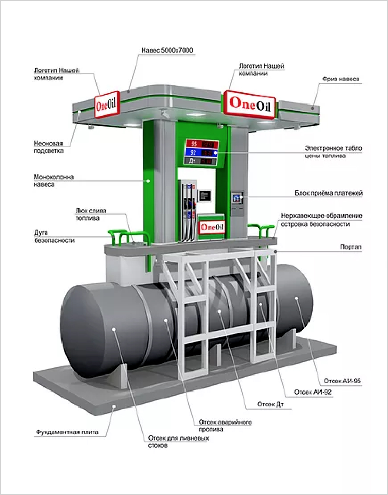
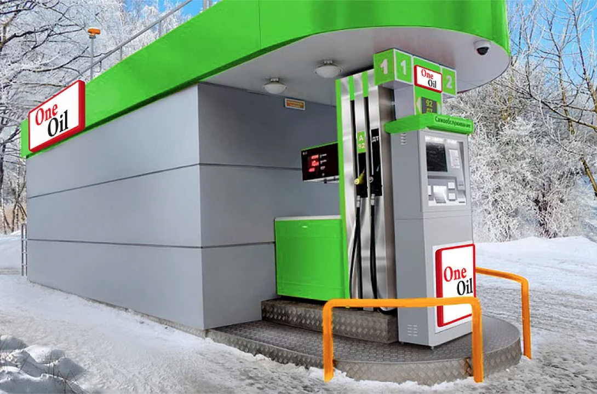

Топливная программа
Собственное направление One Shop World Ltd - обеспечение топливом партнеров с помощью автоматических автозаправочных станций(ААЗС).
Актуальность проекта
В настоящее время большинство компаний занимающихся розничной продажей топлива клиентам, сталкиваются с проблемой расширения сети автозаправочных станций.
Автозаправочные станции необходимы для любого региона страны. При таком количестве АЗС у кого-то может сложиться впечатление, что стоит только захотеть и можно начинать строительство. Однако, самыми изнурительными процедурами, по мнению владельцев АЗС, остаются получение земельного участка и проведение землеустроительных работ.
(см. Федеральный закон "О землеустройстве")
Именно поэтому, One Shop World разворачивает сеть топливных автономных заправочных модулей и автоматических станций Мини-АЗС, состоящие из:
- Блока Мини-АЗС;
- Двух заправочных постов (по желанию больше);
- Площадка слива автоцистерн, занимающую всего 120 м2!
Данная АЗС может размещаться:
- Вблизи гипермаркетов;
- Деловых центров;
- Жилых районов;
- На территориях аэропорта и вокзалов;
- На территориях автотранспортных предприятий;
- На территориях коттеджных поселков.

Станция может работать в условиях от -40 до +35 С, что практически не ограничивает географию использования ААЗС (автоматическая автозаправочная станция). Ведется круглосуточное видеонаблюдение на территории ААЗС.
Оплата топлива может производиться как наличными, так и при помощи пластиковых карт. Независимо от выбора системы оплаты, скорость обслуживания клиента намного больше, чем на обычной стационарной АЗС
Развитие топливного направления проходит в три этапа
1 Этап
Готов к запуску в настоящий момент и стартует весной 2017 года. Продажа топлива через партнеров OneShopWorld. Заправка топливом на АЗС уже готовых сетей. Полный список АЗС, на которых можно заправится для участия в топливной программе в ближайшее время будет размещен на сайте.
Юридические лица, выдают своим водителям заправочные карты, управление которыми организовано через личный кабинет.
Для юридических лиц и ИП, которые являются клиентами One Shop - дистанционное управление всеми картами в режиме реального времени через личный кабинет(изменить литраж на карте, поменять пин-код, открыть/закрыть нужные АЗС и много другое;
- моментальные управленческие и бухгалтерские отчеты, упрощенный документооборот;
- Сервисное обслуживание БЕСПЛАТНО, никаких дополнительных сборов.
Так же можно выбрать через мобильное приложение с помощью определения местоположения ближайшую АЗС или проложить маршрут через нужные заправки если путь дальний.
Как это работает?
Партнер One Shop подъезжает на любую заправку указанную в списке АЗС по всей территории России, Казахстана, Белоруссии, Латвии, Эстонии, Литвы, Украины, Финляндии, Польши и Чехословакии.
Три ситуации:
- У партнера One Shop есть платежная карта нашего банка-партнера. Он указывает в личном кабинете номер этой карты. Один раз. «Привязывает» карту к своему номеру. Оплата производится этой банковской картой. Сумма платежа попадает на номер покупателя в личном кабинете и распределяется по бонусной программе. Сообщать свой номер дополнительно никому не нужно. При оплате картой банка партнера, на личный номер возвращается часть платежа 3,5 %. Это скидка. Возвращенной суммой с личного номера можно пользоваться на следующий день.
- Оплата картой другого банка. Необходимо «привязать» карту к номеру. В личном кабинете надо указать одну или несколько карт с которых будет производиться оплата. При оплате с «чужих» карт, оплата, произведенная за топливо зачисляется на личный объем. При оплате банковской картой не банка партнера скидки нет.
- Оплата наличными. Клиент оплачивает топливо. Сообщает оператору свой номер в системе One Shop World. Покупка зачисляется в личный объем.
Для юридических лиц и ИП со своим автопарком любого размера. Оплата топлива картой One Shop World. Оплата зачисляется на номер юридического лица. Если у этого юрлица 100 машин, то вся сумма будет указана, как личная закупка в личном кабинете на его едином номере Юридического лица или Индивидуального предпринимателя.
Все варианты оплаты участвуют в бонусной программе. Юридические лица, Индивидуальные предприниматели и физические лица участвуют в бонусной программе на одинаковых равноправных условиях.
1 этап готов к запуску в настоящий момент и стартует весной 2017 года. 1 этап - это продажа топлива через сеть готовых АЗС партнеров OneShopWorld по списку АЗС по всей территории России, Казахстана, Белоруссии, Латвии, Эстонии, Литвы, Украины, Финляндии, Польши и Чехии.
2 Этап

Размещение СОБСТВЕННЫХ ТОПЛИВНЫХ МОДУЛЕЙ в тех городах, где есть подтвержденный объем закупок топлива в течении 3-х месяцев по модели первого этапа. Для городов с разным количеством населения, соответственно, разные требования по объемам в месяц.
Уникальность топливных модулей
Продукция «Топливный модуль» не является «Автомобильной заправочной станцией» в соответствии с классификацией (Нормы Пожарной Безопасности) 111-98, однако нами соблюдены все требования пожарной безопасности, предъявляемые НПБ 111-98 и СП(Свод Правил) 156.1330.2014, предъявляемые к АЗС.
- В отличие от стационарных АЗС на топливные модули(ТМ) не действуют жесткие ограничения в части разрешительной документации;
- При установке модулей не требуется проведение мероприятий по проектированию, земельно-строительным работам (ливневая канализация, обваловка грунтом), получение разрешительной документации от надзорных органов;
- Уникальность топливных модулей подтверждается полученными патентами наших поставщиков на изобретение и полезную модель, в частности, на конструкцию топливного бака и ванну аварийного пролива;
- Топливный модуль имеет увеличенный полезный объем за счет использования прямоугольных баков;
- Каркас топливного модуля – это герметичная, рассчитанная на заданные нагрузки конструкция, способная удерживать пролитое топливо от попадания в окружающую среду;
- Каркас модуля антивандальный;
- Ввод модуля в эксплуатацию осуществляется в течение 24 часов. Модуль обеспечивает полную независимость от территориальных условий и сторонних организаций, включая госорганы, строительных подрядчиков и поставщиков ГСМ.
Технические возможности топливных модулей позволяют заправлять различные виды транспортных средств, генераторов и технологических систем, работающих на жидком топливе, как пункты выдачи моторных масел и технических жидкостей:
Легковой транспорт
Наши модули являются полноценными АЗС и позволяют обслуживаться очень быстро с любым способом оплаты. Быстрее чем на обычных АЗС с операторами в 3-4 раза.
Тяжелая техника
Конструкция и оснащение модулей позволяет обеспечивать выдачу топлива со скоростью до 500 л./мин.
Железнодорожная техника
В соответствии с законодательством РФ и действующими регламентами надзорных органов, наши модули устанавливаются без регистрации, дополнительных согласований и практически на любой территории.
Авиационная техника
Емкость для топлива позволяет использовать авиационный керосин.
Морской транспорт
Оборудование топливного модуля позволяет использовать нефтепродукты различной степени вязкости, включая мазут.
«Реализуется принцип:
Привез - Подключил - Работай».
Топливный модуль может быть снабжен розеткой для подключения дизель-генератора, что делает возможным использование модуля в поле, на карьерах и в местах, где нет электросетей. Топливный модуль, в отличие от традиционных АЗС – это комплекс, который легко перевозить с места на место.
Топливный модуль
Позволяет в кратчайшие сроки выстроить топливную сеть OneShopWord по обслуживанию своих клиентов. Не требует дополнительного обслуживающего персонала. Работает полностью автоматически. Без оператора. Обеспечивает возможность заправки любой техники в любых географических и природно-климатических условиях. Функционирует, как в автоматическом, так и в механическом режимах. Является значительно более экономичным решением по сравнению со строительством стационарной АЗС. Данная конструкция не является опасным производственным объектом и не требует согласования в органах защиты и контроля. Топливный модуль поставляется как единое заводское изделие и имеет пол. Конструкция ТМ выполнена с обеспечением герметичности. Согласно нормам СП 156.13130.2014
Установленное оборудование, электрические щиты и кабельные трассы в топливных модулях выполнены во взрывозащищенном исполнении, согласно ГОСТ Р 51330 и ПУЭ, что соответствует требованиям СП 156.13130.2014.
Газовое направление
Как быть счастливым, материально обеспеченным человеком во времена, когда экономика многих стран испытывает кризис, когда робототехника вытесняет рабочие места? Для ответа на этот вопрос компания OneShop с самых первых дней своего запуска создала Академию(Академию OneShop). Основная задача Академии - обучать профессии 21-го века, которую не смогут заменить роботы. В планах компании OneShop создать до миллиона новых высокооплачиваемых рабочих мест для людей, которые в последствии захотят жить счастливой жизнью в автономных городках, построенных по новейшим технологиям.
Обеспечить сеть широким ассортиментом экологически чистых товаров на каждый день, которые позволяют получить пользу и удовольствие от их использования, а также построить на этих товарах растущий и надежный МЛМ бизнес.
Как быть счастливым, материально обеспеченным человеком во времена, когда экономика многих стран испытывает кризис, когда робототехника вытесняет рабочие места? Для ответа на этот вопрос компания OneShop с самых первых дней своего запуска создала Академию(Академию OneShop). Основная задача Академии - обучать профессии 21-го века, которую не смогут заменить роботы. В планах компании OneShop создать до миллиона новых высокооплачиваемых рабочих мест для людей, которые в последствии захотят жить счастливой жизнью в автономных городках, построенных по новейшим технологиям.
Заголовок 2
Плитка картинок
Как быть счастливым, материально обеспеченным человеком во времена, когда экономика многих стран испытывает кризис, когда робототехника вытесняет рабочие места? Для ответа на этот вопрос компания OneShop с самых первых дней своего запуска создала Академию(Академию OneShop). Основная задача Академии - обучать профессии 21-го века, которую не смогут заменить роботы. В планах компании OneShop создать до миллиона новых высокооплачиваемых рабочих мест для людей, которые в последствии захотят жить счастливой жизнью в автономных городках, построенных по новейшим технологиям.